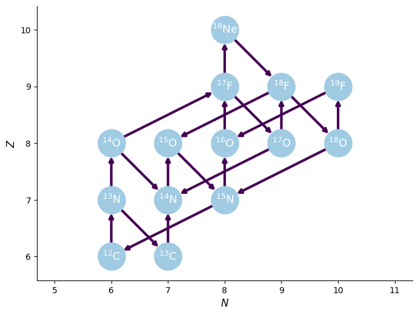
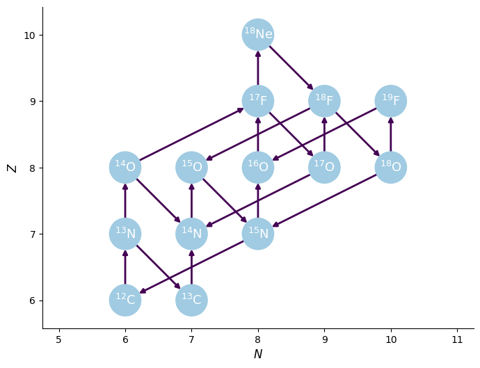
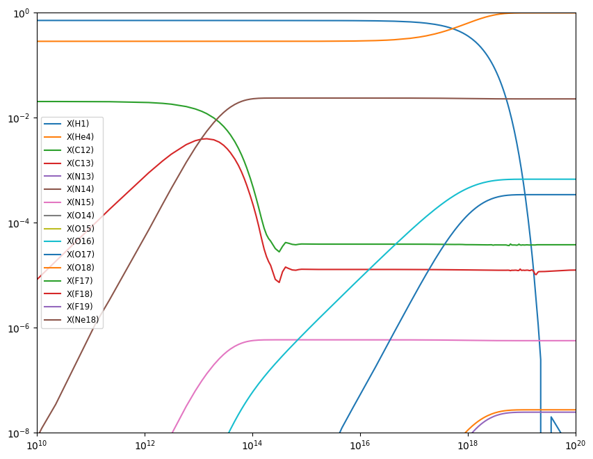

Integration Example
import numpy as np
import matplotlib.pyplot as plt
import pynucastro as pyrl
Integration Example#
We can use pynucastro to generate the righthand side function for an astrophysical reaction network.
We’ll create a CNO network that has the rates for all 4 CNO cycles + hot-CNO, as listed here: https://reaclib.jinaweb.org/popularRates.php
files = ["c12-pg-n13-ls09",
"c13-pg-n14-nacr",
"n13--c13-wc12",
"n13-pg-o14-lg06",
"n14-pg-o15-im05",
"n15-pa-c12-nacr",
"o14--n14-wc12",
"o15--n15-wc12",
"n15-pg-o16-li10",
"o16-pg-f17-ia08",
"f17--o17-wc12",
"o17-pa-n14-il10",
"o17-pg-f18-il10",
"f18--o18-wc12",
"o18-pa-n15-il10",
"o18-pg-f19-il10",
"f19-pa-o16-nacr",
"o14-ap-f17-Ha96c",
"f17-pg-ne18-cb09",
"ne18--f18-wc12",
"f18-pa-o15-il10"]
rc = pyrl.RateCollection(files)
We can visualize the network and rates linking the nuclei
rc.plot()


pynucastro can write out the python code needed to evaluate the reaction rates
pynet = pyrl.PythonNetwork(files)
pynet.write_network("cno_integration_example.py")
%cat cno_integration_example.py
import numba
import numpy as np
from numba.experimental import jitclass
from pynucastro.rates import Tfactors, _find_rate_file
from pynucastro.screening import PlasmaState, ScreenFactors
jp = 0
jhe4 = 1
jc12 = 2
jc13 = 3
jn13 = 4
jn14 = 5
jn15 = 6
jo14 = 7
jo15 = 8
jo16 = 9
jo17 = 10
jo18 = 11
jf17 = 12
jf18 = 13
jf19 = 14
jne18 = 15
nnuc = 16
A = np.zeros((nnuc), dtype=np.int32)
A[jp] = 1
A[jhe4] = 4
A[jc12] = 12
A[jc13] = 13
A[jn13] = 13
A[jn14] = 14
A[jn15] = 15
A[jo14] = 14
A[jo15] = 15
A[jo16] = 16
A[jo17] = 17
A[jo18] = 18
A[jf17] = 17
A[jf18] = 18
A[jf19] = 19
A[jne18] = 18
Z = np.zeros((nnuc), dtype=np.int32)
Z[jp] = 1
Z[jhe4] = 2
Z[jc12] = 6
Z[jc13] = 6
Z[jn13] = 7
Z[jn14] = 7
Z[jn15] = 7
Z[jo14] = 8
Z[jo15] = 8
Z[jo16] = 8
Z[jo17] = 8
Z[jo18] = 8
Z[jf17] = 9
Z[jf18] = 9
Z[jf19] = 9
Z[jne18] = 10
names = []
names.append("h1")
names.append("he4")
names.append("c12")
names.append("c13")
names.append("n13")
names.append("n14")
names.append("n15")
names.append("o14")
names.append("o15")
names.append("o16")
names.append("o17")
names.append("o18")
names.append("f17")
names.append("f18")
names.append("f19")
names.append("ne18")
@jitclass([
("p_c12__n13", numba.float64),
("p_c13__n14", numba.float64),
("n13__c13__weak__wc12", numba.float64),
("p_n13__o14", numba.float64),
("p_n14__o15", numba.float64),
("p_n15__he4_c12", numba.float64),
("o14__n14__weak__wc12", numba.float64),
("o15__n15__weak__wc12", numba.float64),
("p_n15__o16", numba.float64),
("p_o16__f17", numba.float64),
("f17__o17__weak__wc12", numba.float64),
("p_o17__he4_n14", numba.float64),
("p_o17__f18", numba.float64),
("f18__o18__weak__wc12", numba.float64),
("p_o18__he4_n15", numba.float64),
("p_o18__f19", numba.float64),
("p_f19__he4_o16", numba.float64),
("he4_o14__p_f17", numba.float64),
("p_f17__ne18", numba.float64),
("ne18__f18__weak__wc12", numba.float64),
("p_f18__he4_o15", numba.float64),
])
class RateEval:
def __init__(self):
self.p_c12__n13 = np.nan
self.p_c13__n14 = np.nan
self.n13__c13__weak__wc12 = np.nan
self.p_n13__o14 = np.nan
self.p_n14__o15 = np.nan
self.p_n15__he4_c12 = np.nan
self.o14__n14__weak__wc12 = np.nan
self.o15__n15__weak__wc12 = np.nan
self.p_n15__o16 = np.nan
self.p_o16__f17 = np.nan
self.f17__o17__weak__wc12 = np.nan
self.p_o17__he4_n14 = np.nan
self.p_o17__f18 = np.nan
self.f18__o18__weak__wc12 = np.nan
self.p_o18__he4_n15 = np.nan
self.p_o18__f19 = np.nan
self.p_f19__he4_o16 = np.nan
self.he4_o14__p_f17 = np.nan
self.p_f17__ne18 = np.nan
self.ne18__f18__weak__wc12 = np.nan
self.p_f18__he4_o15 = np.nan
@numba.njit()
def ye(Y):
return np.sum(Z * Y)/np.sum(A * Y)
@numba.njit()
def p_c12__n13(rate_eval, tf):
# c12 + p --> n13
rate = 0.0
# ls09n
rate += np.exp( 17.1482 + -13.692*tf.T913i + -0.230881*tf.T913
+ 4.44362*tf.T9 + -3.15898*tf.T953 + -0.666667*tf.lnT9)
# ls09r
rate += np.exp( 17.5428 + -3.77849*tf.T9i + -5.10735*tf.T913i + -2.24111*tf.T913
+ 0.148883*tf.T9 + -1.5*tf.lnT9)
rate_eval.p_c12__n13 = rate
@numba.njit()
def p_c13__n14(rate_eval, tf):
# c13 + p --> n14
rate = 0.0
# nacrn
rate += np.exp( 18.5155 + -13.72*tf.T913i + -0.450018*tf.T913
+ 3.70823*tf.T9 + -1.70545*tf.T953 + -0.666667*tf.lnT9)
# nacrr
rate += np.exp( 13.9637 + -5.78147*tf.T9i + -0.196703*tf.T913
+ 0.142126*tf.T9 + -0.0238912*tf.T953 + -1.5*tf.lnT9)
# nacrr
rate += np.exp( 15.1825 + -13.5543*tf.T9i
+ -1.5*tf.lnT9)
rate_eval.p_c13__n14 = rate
@numba.njit()
def n13__c13__weak__wc12(rate_eval, tf):
# n13 --> c13
rate = 0.0
# wc12w
rate += np.exp( -6.7601)
rate_eval.n13__c13__weak__wc12 = rate
@numba.njit()
def p_n13__o14(rate_eval, tf):
# n13 + p --> o14
rate = 0.0
# lg06n
rate += np.exp( 18.1356 + -15.1676*tf.T913i + 0.0955166*tf.T913
+ 3.0659*tf.T9 + -0.507339*tf.T953 + -0.666667*tf.lnT9)
# lg06r
rate += np.exp( 10.9971 + -6.12602*tf.T9i + 1.57122*tf.T913i
+ -1.5*tf.lnT9)
rate_eval.p_n13__o14 = rate
@numba.njit()
def p_n14__o15(rate_eval, tf):
# n14 + p --> o15
rate = 0.0
# im05n
rate += np.exp( 17.01 + -15.193*tf.T913i + -0.161954*tf.T913
+ -7.52123*tf.T9 + -0.987565*tf.T953 + -0.666667*tf.lnT9)
# im05r
rate += np.exp( 6.73578 + -4.891*tf.T9i
+ 0.0682*tf.lnT9)
# im05r
rate += np.exp( 7.65444 + -2.998*tf.T9i
+ -1.5*tf.lnT9)
# im05n
rate += np.exp( 20.1169 + -15.193*tf.T913i + -4.63975*tf.T913
+ 9.73458*tf.T9 + -9.55051*tf.T953 + 0.333333*tf.lnT9)
rate_eval.p_n14__o15 = rate
@numba.njit()
def p_n15__he4_c12(rate_eval, tf):
# n15 + p --> he4 + c12
rate = 0.0
# nacrn
rate += np.exp( 27.4764 + -15.253*tf.T913i + 1.59318*tf.T913
+ 2.4479*tf.T9 + -2.19708*tf.T953 + -0.666667*tf.lnT9)
# nacrr
rate += np.exp( -6.57522 + -1.1638*tf.T9i + 22.7105*tf.T913
+ -2.90707*tf.T9 + 0.205754*tf.T953 + -1.5*tf.lnT9)
# nacrr
rate += np.exp( 20.8972 + -7.406*tf.T9i
+ -1.5*tf.lnT9)
# nacrr
rate += np.exp( -4.87347 + -2.02117*tf.T9i + 30.8497*tf.T913
+ -8.50433*tf.T9 + -1.54426*tf.T953 + -1.5*tf.lnT9)
rate_eval.p_n15__he4_c12 = rate
@numba.njit()
def o14__n14__weak__wc12(rate_eval, tf):
# o14 --> n14
rate = 0.0
# wc12w
rate += np.exp( -4.62354)
rate_eval.o14__n14__weak__wc12 = rate
@numba.njit()
def o15__n15__weak__wc12(rate_eval, tf):
# o15 --> n15
rate = 0.0
# wc12w
rate += np.exp( -5.17053)
rate_eval.o15__n15__weak__wc12 = rate
@numba.njit()
def p_n15__o16(rate_eval, tf):
# n15 + p --> o16
rate = 0.0
# li10r
rate += np.exp( 14.5444 + -10.2295*tf.T9i
+ 0.0459037*tf.T9 + -1.5*tf.lnT9)
# li10r
rate += np.exp( 6.59056 + -2.92315*tf.T9i
+ -1.5*tf.lnT9)
# li10n
rate += np.exp( 20.0176 + -15.24*tf.T913i + 0.334926*tf.T913
+ 4.59088*tf.T9 + -4.78468*tf.T953 + -0.666667*tf.lnT9)
rate_eval.p_n15__o16 = rate
@numba.njit()
def p_o16__f17(rate_eval, tf):
# o16 + p --> f17
rate = 0.0
# ia08n
rate += np.exp( 19.0904 + -16.696*tf.T913i + -1.16252*tf.T913
+ 0.267703*tf.T9 + -0.0338411*tf.T953 + -0.666667*tf.lnT9)
rate_eval.p_o16__f17 = rate
@numba.njit()
def f17__o17__weak__wc12(rate_eval, tf):
# f17 --> o17
rate = 0.0
# wc12w
rate += np.exp( -4.53318)
rate_eval.f17__o17__weak__wc12 = rate
@numba.njit()
def p_o17__he4_n14(rate_eval, tf):
# o17 + p --> he4 + n14
rate = 0.0
# il10r
rate += np.exp( 10.174 + -4.95865*tf.T9i + 5.10182*tf.T913
+ 0.379373*tf.T9 + -0.0672515*tf.T953 + -1.5*tf.lnT9)
# il10r
rate += np.exp( 5.5336 + -2.11477*tf.T9i
+ -1.5*tf.lnT9)
# il10r
rate += np.exp( -7.20763 + -0.753395*tf.T9i
+ -1.5*tf.lnT9)
# il10n
rate += np.exp( 19.579 + -16.9078*tf.T913i
+ -2.0*tf.T953 + -0.666667*tf.lnT9)
rate_eval.p_o17__he4_n14 = rate
@numba.njit()
def p_o17__f18(rate_eval, tf):
# o17 + p --> f18
rate = 0.0
# il10r
rate += np.exp( 9.39048 + -6.22828*tf.T9i + 2.31435*tf.T913
+ -0.302835*tf.T9 + 0.020133*tf.T953 + -1.5*tf.lnT9)
# il10r
rate += np.exp( -13.077 + -0.746296*tf.T9i
+ -1.5*tf.lnT9)
# il10n
rate += np.exp( 15.8929 + -16.4035*tf.T913i + 4.31885*tf.T913
+ -0.709921*tf.T9 + -2.0*tf.T953 + -0.666667*tf.lnT9)
rate_eval.p_o17__f18 = rate
@numba.njit()
def f18__o18__weak__wc12(rate_eval, tf):
# f18 --> o18
rate = 0.0
# wc12w
rate += np.exp( -9.15982)
rate_eval.f18__o18__weak__wc12 = rate
@numba.njit()
def p_o18__he4_n15(rate_eval, tf):
# o18 + p --> he4 + n15
rate = 0.0
# il10r
rate += np.exp( -27.9044 + -0.245884*tf.T9i
+ -1.5*tf.lnT9)
# il10n
rate += np.exp( 26.9671 + -16.6979*tf.T913i
+ -3.0*tf.T953 + -0.666667*tf.lnT9)
# il10r
rate += np.exp( 8.94352 + -5.32335*tf.T9i + 11.6568*tf.T913
+ -2.16303*tf.T9 + 0.209965*tf.T953 + -1.5*tf.lnT9)
# il10r
rate += np.exp( 10.2725 + -1.663*tf.T9i
+ -1.5*tf.lnT9)
rate_eval.p_o18__he4_n15 = rate
@numba.njit()
def p_o18__f19(rate_eval, tf):
# o18 + p --> f19
rate = 0.0
# il10r
rate += np.exp( 5.07648 + -1.65681*tf.T9i
+ -1.5*tf.lnT9)
# il10r
rate += np.exp( -35.0079 + -0.244743*tf.T9i
+ -1.5*tf.lnT9)
# il10n
rate += np.exp( 19.917 + -16.7246*tf.T913i
+ -3.0*tf.T953 + -0.666667*tf.lnT9)
# il10r
rate += np.exp( 7.26876 + -6.7253*tf.T9i + 3.99059*tf.T913
+ -0.593127*tf.T9 + 0.0877534*tf.T953 + -1.5*tf.lnT9)
rate_eval.p_o18__f19 = rate
@numba.njit()
def p_f19__he4_o16(rate_eval, tf):
# f19 + p --> he4 + o16
rate = 0.0
# nacr
rate += np.exp( 15.1955 + -3.75185*tf.T9i
+ -1.5*tf.lnT9)
# nacr
rate += np.exp( 8.239 + -2.46828*tf.T9i
+ -1.5*tf.lnT9)
# nacr
rate += np.exp( -52.7043 + -0.12765*tf.T9i
+ -1.5*tf.lnT9)
# nacr
rate += np.exp( 26.2916 + -18.116*tf.T913i
+ 1.86674*tf.T9 + -7.5666*tf.T953 + -0.666667*tf.lnT9)
# nacrr
rate += np.exp( 14.3586 + -3.286*tf.T9i
+ -0.21103*tf.T9 + 2.87702*tf.lnT9)
rate_eval.p_f19__he4_o16 = rate
@numba.njit()
def he4_o14__p_f17(rate_eval, tf):
# o14 + he4 --> p + f17
rate = 0.0
# Ha96n
rate += np.exp( 40.8358 + -39.388*tf.T913i + -17.4673*tf.T913
+ 35.3029*tf.T9 + -24.8162*tf.T953 + -0.666667*tf.lnT9)
# Ha96r
rate += np.exp( 16.3087 + -22.51*tf.T9i
+ -1.5*tf.lnT9)
# Ha96r
rate += np.exp( 11.1184 + -13.6*tf.T9i
+ -1.5*tf.lnT9)
# Ha96r
rate += np.exp( -106.091 + -0.453036*tf.T9i
+ -1.5*tf.lnT9)
# Ha96r
rate += np.exp( 12.1289 + -12.0223*tf.T9i
+ -1.5*tf.lnT9)
# Ha96r
rate += np.exp( 18.6518 + -26.0*tf.T9i
+ -1.5*tf.lnT9)
rate_eval.he4_o14__p_f17 = rate
@numba.njit()
def p_f17__ne18(rate_eval, tf):
# f17 + p --> ne18
rate = 0.0
# cb09
rate += np.exp( 27.5778 + -4.95969*tf.T9i + -21.3249*tf.T913i + -0.230774*tf.T913
+ 0.917931*tf.T9 + -0.0440377*tf.T953 + -7.36014*tf.lnT9)
# cb09
rate += np.exp( -7.84708 + -0.0323504*tf.T9i + -14.2191*tf.T913i + 34.0647*tf.T913
+ -16.5698*tf.T9 + 2.48116*tf.T953 + -2.13376*tf.lnT9)
rate_eval.p_f17__ne18 = rate
@numba.njit()
def ne18__f18__weak__wc12(rate_eval, tf):
# ne18 --> f18
rate = 0.0
# wc12w
rate += np.exp( -0.879336)
rate_eval.ne18__f18__weak__wc12 = rate
@numba.njit()
def p_f18__he4_o15(rate_eval, tf):
# f18 + p --> he4 + o15
rate = 0.0
# il10n
rate += np.exp( 62.0058 + -21.4023*tf.T913i + -80.8891*tf.T913
+ 134.6*tf.T9 + -126.504*tf.T953 + -0.666667*tf.lnT9)
# il10r
rate += np.exp( 1.75704 + -3.01675*tf.T9i + 13.3223*tf.T913
+ -1.36696*tf.T9 + 0.0757363*tf.T953 + -1.5*tf.lnT9)
# il10r
rate += np.exp( -31.7388 + -0.376432*tf.T9i + 61.738*tf.T913
+ -108.29*tf.T9 + -34.2365*tf.T953 + -1.5*tf.lnT9)
rate_eval.p_f18__he4_o15 = rate
def rhs(t, Y, rho, T, screen_func=None):
return rhs_eq(t, Y, rho, T, screen_func)
@numba.njit()
def rhs_eq(t, Y, rho, T, screen_func):
tf = Tfactors(T)
rate_eval = RateEval()
# reaclib rates
p_c12__n13(rate_eval, tf)
p_c13__n14(rate_eval, tf)
n13__c13__weak__wc12(rate_eval, tf)
p_n13__o14(rate_eval, tf)
p_n14__o15(rate_eval, tf)
p_n15__he4_c12(rate_eval, tf)
o14__n14__weak__wc12(rate_eval, tf)
o15__n15__weak__wc12(rate_eval, tf)
p_n15__o16(rate_eval, tf)
p_o16__f17(rate_eval, tf)
f17__o17__weak__wc12(rate_eval, tf)
p_o17__he4_n14(rate_eval, tf)
p_o17__f18(rate_eval, tf)
f18__o18__weak__wc12(rate_eval, tf)
p_o18__he4_n15(rate_eval, tf)
p_o18__f19(rate_eval, tf)
p_f19__he4_o16(rate_eval, tf)
he4_o14__p_f17(rate_eval, tf)
p_f17__ne18(rate_eval, tf)
ne18__f18__weak__wc12(rate_eval, tf)
p_f18__he4_o15(rate_eval, tf)
if screen_func is not None:
plasma_state = PlasmaState(T, rho, Y, Z)
scn_fac = ScreenFactors(1, 1, 6, 12)
scor = screen_func(plasma_state, scn_fac)
rate_eval.p_c12__n13 *= scor
scn_fac = ScreenFactors(1, 1, 6, 13)
scor = screen_func(plasma_state, scn_fac)
rate_eval.p_c13__n14 *= scor
scn_fac = ScreenFactors(1, 1, 7, 13)
scor = screen_func(plasma_state, scn_fac)
rate_eval.p_n13__o14 *= scor
scn_fac = ScreenFactors(1, 1, 7, 14)
scor = screen_func(plasma_state, scn_fac)
rate_eval.p_n14__o15 *= scor
scn_fac = ScreenFactors(1, 1, 7, 15)
scor = screen_func(plasma_state, scn_fac)
rate_eval.p_n15__he4_c12 *= scor
rate_eval.p_n15__o16 *= scor
scn_fac = ScreenFactors(1, 1, 8, 16)
scor = screen_func(plasma_state, scn_fac)
rate_eval.p_o16__f17 *= scor
scn_fac = ScreenFactors(1, 1, 8, 17)
scor = screen_func(plasma_state, scn_fac)
rate_eval.p_o17__he4_n14 *= scor
rate_eval.p_o17__f18 *= scor
scn_fac = ScreenFactors(1, 1, 8, 18)
scor = screen_func(plasma_state, scn_fac)
rate_eval.p_o18__he4_n15 *= scor
rate_eval.p_o18__f19 *= scor
scn_fac = ScreenFactors(1, 1, 9, 19)
scor = screen_func(plasma_state, scn_fac)
rate_eval.p_f19__he4_o16 *= scor
scn_fac = ScreenFactors(2, 4, 8, 14)
scor = screen_func(plasma_state, scn_fac)
rate_eval.he4_o14__p_f17 *= scor
scn_fac = ScreenFactors(1, 1, 9, 17)
scor = screen_func(plasma_state, scn_fac)
rate_eval.p_f17__ne18 *= scor
scn_fac = ScreenFactors(1, 1, 9, 18)
scor = screen_func(plasma_state, scn_fac)
rate_eval.p_f18__he4_o15 *= scor
dYdt = np.zeros((nnuc), dtype=np.float64)
dYdt[jp] = (
-rho*Y[jp]*Y[jc12]*rate_eval.p_c12__n13
-rho*Y[jp]*Y[jc13]*rate_eval.p_c13__n14
-rho*Y[jp]*Y[jn13]*rate_eval.p_n13__o14
-rho*Y[jp]*Y[jn14]*rate_eval.p_n14__o15
-rho*Y[jp]*Y[jn15]*rate_eval.p_n15__he4_c12
-rho*Y[jp]*Y[jn15]*rate_eval.p_n15__o16
-rho*Y[jp]*Y[jo16]*rate_eval.p_o16__f17
-rho*Y[jp]*Y[jo17]*rate_eval.p_o17__he4_n14
-rho*Y[jp]*Y[jo17]*rate_eval.p_o17__f18
-rho*Y[jp]*Y[jo18]*rate_eval.p_o18__he4_n15
-rho*Y[jp]*Y[jo18]*rate_eval.p_o18__f19
-rho*Y[jp]*Y[jf19]*rate_eval.p_f19__he4_o16
-rho*Y[jp]*Y[jf17]*rate_eval.p_f17__ne18
-rho*Y[jp]*Y[jf18]*rate_eval.p_f18__he4_o15
+rho*Y[jhe4]*Y[jo14]*rate_eval.he4_o14__p_f17
)
dYdt[jhe4] = (
-rho*Y[jhe4]*Y[jo14]*rate_eval.he4_o14__p_f17
+rho*Y[jp]*Y[jn15]*rate_eval.p_n15__he4_c12
+rho*Y[jp]*Y[jo17]*rate_eval.p_o17__he4_n14
+rho*Y[jp]*Y[jo18]*rate_eval.p_o18__he4_n15
+rho*Y[jp]*Y[jf19]*rate_eval.p_f19__he4_o16
+rho*Y[jp]*Y[jf18]*rate_eval.p_f18__he4_o15
)
dYdt[jc12] = (
-rho*Y[jp]*Y[jc12]*rate_eval.p_c12__n13
+rho*Y[jp]*Y[jn15]*rate_eval.p_n15__he4_c12
)
dYdt[jc13] = (
-rho*Y[jp]*Y[jc13]*rate_eval.p_c13__n14
+Y[jn13]*rate_eval.n13__c13__weak__wc12
)
dYdt[jn13] = (
-Y[jn13]*rate_eval.n13__c13__weak__wc12
-rho*Y[jp]*Y[jn13]*rate_eval.p_n13__o14
+rho*Y[jp]*Y[jc12]*rate_eval.p_c12__n13
)
dYdt[jn14] = (
-rho*Y[jp]*Y[jn14]*rate_eval.p_n14__o15
+rho*Y[jp]*Y[jc13]*rate_eval.p_c13__n14
+Y[jo14]*rate_eval.o14__n14__weak__wc12
+rho*Y[jp]*Y[jo17]*rate_eval.p_o17__he4_n14
)
dYdt[jn15] = (
-rho*Y[jp]*Y[jn15]*rate_eval.p_n15__he4_c12
-rho*Y[jp]*Y[jn15]*rate_eval.p_n15__o16
+Y[jo15]*rate_eval.o15__n15__weak__wc12
+rho*Y[jp]*Y[jo18]*rate_eval.p_o18__he4_n15
)
dYdt[jo14] = (
-Y[jo14]*rate_eval.o14__n14__weak__wc12
-rho*Y[jhe4]*Y[jo14]*rate_eval.he4_o14__p_f17
+rho*Y[jp]*Y[jn13]*rate_eval.p_n13__o14
)
dYdt[jo15] = (
-Y[jo15]*rate_eval.o15__n15__weak__wc12
+rho*Y[jp]*Y[jn14]*rate_eval.p_n14__o15
+rho*Y[jp]*Y[jf18]*rate_eval.p_f18__he4_o15
)
dYdt[jo16] = (
-rho*Y[jp]*Y[jo16]*rate_eval.p_o16__f17
+rho*Y[jp]*Y[jn15]*rate_eval.p_n15__o16
+rho*Y[jp]*Y[jf19]*rate_eval.p_f19__he4_o16
)
dYdt[jo17] = (
-rho*Y[jp]*Y[jo17]*rate_eval.p_o17__he4_n14
-rho*Y[jp]*Y[jo17]*rate_eval.p_o17__f18
+Y[jf17]*rate_eval.f17__o17__weak__wc12
)
dYdt[jo18] = (
-rho*Y[jp]*Y[jo18]*rate_eval.p_o18__he4_n15
-rho*Y[jp]*Y[jo18]*rate_eval.p_o18__f19
+Y[jf18]*rate_eval.f18__o18__weak__wc12
)
dYdt[jf17] = (
-Y[jf17]*rate_eval.f17__o17__weak__wc12
-rho*Y[jp]*Y[jf17]*rate_eval.p_f17__ne18
+rho*Y[jp]*Y[jo16]*rate_eval.p_o16__f17
+rho*Y[jhe4]*Y[jo14]*rate_eval.he4_o14__p_f17
)
dYdt[jf18] = (
-Y[jf18]*rate_eval.f18__o18__weak__wc12
-rho*Y[jp]*Y[jf18]*rate_eval.p_f18__he4_o15
+rho*Y[jp]*Y[jo17]*rate_eval.p_o17__f18
+Y[jne18]*rate_eval.ne18__f18__weak__wc12
)
dYdt[jf19] = (
-rho*Y[jp]*Y[jf19]*rate_eval.p_f19__he4_o16
+rho*Y[jp]*Y[jo18]*rate_eval.p_o18__f19
)
dYdt[jne18] = (
-Y[jne18]*rate_eval.ne18__f18__weak__wc12
+rho*Y[jp]*Y[jf17]*rate_eval.p_f17__ne18
)
return dYdt
def jacobian(t, Y, rho, T, screen_func=None):
return jacobian_eq(t, Y, rho, T, screen_func)
@numba.njit()
def jacobian_eq(t, Y, rho, T, screen_func):
tf = Tfactors(T)
rate_eval = RateEval()
# reaclib rates
p_c12__n13(rate_eval, tf)
p_c13__n14(rate_eval, tf)
n13__c13__weak__wc12(rate_eval, tf)
p_n13__o14(rate_eval, tf)
p_n14__o15(rate_eval, tf)
p_n15__he4_c12(rate_eval, tf)
o14__n14__weak__wc12(rate_eval, tf)
o15__n15__weak__wc12(rate_eval, tf)
p_n15__o16(rate_eval, tf)
p_o16__f17(rate_eval, tf)
f17__o17__weak__wc12(rate_eval, tf)
p_o17__he4_n14(rate_eval, tf)
p_o17__f18(rate_eval, tf)
f18__o18__weak__wc12(rate_eval, tf)
p_o18__he4_n15(rate_eval, tf)
p_o18__f19(rate_eval, tf)
p_f19__he4_o16(rate_eval, tf)
he4_o14__p_f17(rate_eval, tf)
p_f17__ne18(rate_eval, tf)
ne18__f18__weak__wc12(rate_eval, tf)
p_f18__he4_o15(rate_eval, tf)
if screen_func is not None:
plasma_state = PlasmaState(T, rho, Y, Z)
scn_fac = ScreenFactors(1, 1, 6, 12)
scor = screen_func(plasma_state, scn_fac)
rate_eval.p_c12__n13 *= scor
scn_fac = ScreenFactors(1, 1, 6, 13)
scor = screen_func(plasma_state, scn_fac)
rate_eval.p_c13__n14 *= scor
scn_fac = ScreenFactors(1, 1, 7, 13)
scor = screen_func(plasma_state, scn_fac)
rate_eval.p_n13__o14 *= scor
scn_fac = ScreenFactors(1, 1, 7, 14)
scor = screen_func(plasma_state, scn_fac)
rate_eval.p_n14__o15 *= scor
scn_fac = ScreenFactors(1, 1, 7, 15)
scor = screen_func(plasma_state, scn_fac)
rate_eval.p_n15__he4_c12 *= scor
rate_eval.p_n15__o16 *= scor
scn_fac = ScreenFactors(1, 1, 8, 16)
scor = screen_func(plasma_state, scn_fac)
rate_eval.p_o16__f17 *= scor
scn_fac = ScreenFactors(1, 1, 8, 17)
scor = screen_func(plasma_state, scn_fac)
rate_eval.p_o17__he4_n14 *= scor
rate_eval.p_o17__f18 *= scor
scn_fac = ScreenFactors(1, 1, 8, 18)
scor = screen_func(plasma_state, scn_fac)
rate_eval.p_o18__he4_n15 *= scor
rate_eval.p_o18__f19 *= scor
scn_fac = ScreenFactors(1, 1, 9, 19)
scor = screen_func(plasma_state, scn_fac)
rate_eval.p_f19__he4_o16 *= scor
scn_fac = ScreenFactors(2, 4, 8, 14)
scor = screen_func(plasma_state, scn_fac)
rate_eval.he4_o14__p_f17 *= scor
scn_fac = ScreenFactors(1, 1, 9, 17)
scor = screen_func(plasma_state, scn_fac)
rate_eval.p_f17__ne18 *= scor
scn_fac = ScreenFactors(1, 1, 9, 18)
scor = screen_func(plasma_state, scn_fac)
rate_eval.p_f18__he4_o15 *= scor
jac = np.zeros((nnuc, nnuc), dtype=np.float64)
jac[jp, jp] = (
-rho*Y[jc12]*rate_eval.p_c12__n13
-rho*Y[jc13]*rate_eval.p_c13__n14
-rho*Y[jn13]*rate_eval.p_n13__o14
-rho*Y[jn14]*rate_eval.p_n14__o15
-rho*Y[jn15]*rate_eval.p_n15__he4_c12
-rho*Y[jn15]*rate_eval.p_n15__o16
-rho*Y[jo16]*rate_eval.p_o16__f17
-rho*Y[jo17]*rate_eval.p_o17__he4_n14
-rho*Y[jo17]*rate_eval.p_o17__f18
-rho*Y[jo18]*rate_eval.p_o18__he4_n15
-rho*Y[jo18]*rate_eval.p_o18__f19
-rho*Y[jf19]*rate_eval.p_f19__he4_o16
-rho*Y[jf17]*rate_eval.p_f17__ne18
-rho*Y[jf18]*rate_eval.p_f18__he4_o15
)
jac[jp, jhe4] = (
+rho*Y[jo14]*rate_eval.he4_o14__p_f17
)
jac[jp, jc12] = (
-rho*Y[jp]*rate_eval.p_c12__n13
)
jac[jp, jc13] = (
-rho*Y[jp]*rate_eval.p_c13__n14
)
jac[jp, jn13] = (
-rho*Y[jp]*rate_eval.p_n13__o14
)
jac[jp, jn14] = (
-rho*Y[jp]*rate_eval.p_n14__o15
)
jac[jp, jn15] = (
-rho*Y[jp]*rate_eval.p_n15__he4_c12
-rho*Y[jp]*rate_eval.p_n15__o16
)
jac[jp, jo14] = (
+rho*Y[jhe4]*rate_eval.he4_o14__p_f17
)
jac[jp, jo16] = (
-rho*Y[jp]*rate_eval.p_o16__f17
)
jac[jp, jo17] = (
-rho*Y[jp]*rate_eval.p_o17__he4_n14
-rho*Y[jp]*rate_eval.p_o17__f18
)
jac[jp, jo18] = (
-rho*Y[jp]*rate_eval.p_o18__he4_n15
-rho*Y[jp]*rate_eval.p_o18__f19
)
jac[jp, jf17] = (
-rho*Y[jp]*rate_eval.p_f17__ne18
)
jac[jp, jf18] = (
-rho*Y[jp]*rate_eval.p_f18__he4_o15
)
jac[jp, jf19] = (
-rho*Y[jp]*rate_eval.p_f19__he4_o16
)
jac[jhe4, jp] = (
+rho*Y[jn15]*rate_eval.p_n15__he4_c12
+rho*Y[jo17]*rate_eval.p_o17__he4_n14
+rho*Y[jo18]*rate_eval.p_o18__he4_n15
+rho*Y[jf19]*rate_eval.p_f19__he4_o16
+rho*Y[jf18]*rate_eval.p_f18__he4_o15
)
jac[jhe4, jhe4] = (
-rho*Y[jo14]*rate_eval.he4_o14__p_f17
)
jac[jhe4, jn15] = (
+rho*Y[jp]*rate_eval.p_n15__he4_c12
)
jac[jhe4, jo14] = (
-rho*Y[jhe4]*rate_eval.he4_o14__p_f17
)
jac[jhe4, jo17] = (
+rho*Y[jp]*rate_eval.p_o17__he4_n14
)
jac[jhe4, jo18] = (
+rho*Y[jp]*rate_eval.p_o18__he4_n15
)
jac[jhe4, jf18] = (
+rho*Y[jp]*rate_eval.p_f18__he4_o15
)
jac[jhe4, jf19] = (
+rho*Y[jp]*rate_eval.p_f19__he4_o16
)
jac[jc12, jp] = (
-rho*Y[jc12]*rate_eval.p_c12__n13
+rho*Y[jn15]*rate_eval.p_n15__he4_c12
)
jac[jc12, jc12] = (
-rho*Y[jp]*rate_eval.p_c12__n13
)
jac[jc12, jn15] = (
+rho*Y[jp]*rate_eval.p_n15__he4_c12
)
jac[jc13, jp] = (
-rho*Y[jc13]*rate_eval.p_c13__n14
)
jac[jc13, jc13] = (
-rho*Y[jp]*rate_eval.p_c13__n14
)
jac[jc13, jn13] = (
+rate_eval.n13__c13__weak__wc12
)
jac[jn13, jp] = (
-rho*Y[jn13]*rate_eval.p_n13__o14
+rho*Y[jc12]*rate_eval.p_c12__n13
)
jac[jn13, jc12] = (
+rho*Y[jp]*rate_eval.p_c12__n13
)
jac[jn13, jn13] = (
-rate_eval.n13__c13__weak__wc12
-rho*Y[jp]*rate_eval.p_n13__o14
)
jac[jn14, jp] = (
-rho*Y[jn14]*rate_eval.p_n14__o15
+rho*Y[jc13]*rate_eval.p_c13__n14
+rho*Y[jo17]*rate_eval.p_o17__he4_n14
)
jac[jn14, jc13] = (
+rho*Y[jp]*rate_eval.p_c13__n14
)
jac[jn14, jn14] = (
-rho*Y[jp]*rate_eval.p_n14__o15
)
jac[jn14, jo14] = (
+rate_eval.o14__n14__weak__wc12
)
jac[jn14, jo17] = (
+rho*Y[jp]*rate_eval.p_o17__he4_n14
)
jac[jn15, jp] = (
-rho*Y[jn15]*rate_eval.p_n15__he4_c12
-rho*Y[jn15]*rate_eval.p_n15__o16
+rho*Y[jo18]*rate_eval.p_o18__he4_n15
)
jac[jn15, jn15] = (
-rho*Y[jp]*rate_eval.p_n15__he4_c12
-rho*Y[jp]*rate_eval.p_n15__o16
)
jac[jn15, jo15] = (
+rate_eval.o15__n15__weak__wc12
)
jac[jn15, jo18] = (
+rho*Y[jp]*rate_eval.p_o18__he4_n15
)
jac[jo14, jp] = (
+rho*Y[jn13]*rate_eval.p_n13__o14
)
jac[jo14, jhe4] = (
-rho*Y[jo14]*rate_eval.he4_o14__p_f17
)
jac[jo14, jn13] = (
+rho*Y[jp]*rate_eval.p_n13__o14
)
jac[jo14, jo14] = (
-rate_eval.o14__n14__weak__wc12
-rho*Y[jhe4]*rate_eval.he4_o14__p_f17
)
jac[jo15, jp] = (
+rho*Y[jn14]*rate_eval.p_n14__o15
+rho*Y[jf18]*rate_eval.p_f18__he4_o15
)
jac[jo15, jn14] = (
+rho*Y[jp]*rate_eval.p_n14__o15
)
jac[jo15, jo15] = (
-rate_eval.o15__n15__weak__wc12
)
jac[jo15, jf18] = (
+rho*Y[jp]*rate_eval.p_f18__he4_o15
)
jac[jo16, jp] = (
-rho*Y[jo16]*rate_eval.p_o16__f17
+rho*Y[jn15]*rate_eval.p_n15__o16
+rho*Y[jf19]*rate_eval.p_f19__he4_o16
)
jac[jo16, jn15] = (
+rho*Y[jp]*rate_eval.p_n15__o16
)
jac[jo16, jo16] = (
-rho*Y[jp]*rate_eval.p_o16__f17
)
jac[jo16, jf19] = (
+rho*Y[jp]*rate_eval.p_f19__he4_o16
)
jac[jo17, jp] = (
-rho*Y[jo17]*rate_eval.p_o17__he4_n14
-rho*Y[jo17]*rate_eval.p_o17__f18
)
jac[jo17, jo17] = (
-rho*Y[jp]*rate_eval.p_o17__he4_n14
-rho*Y[jp]*rate_eval.p_o17__f18
)
jac[jo17, jf17] = (
+rate_eval.f17__o17__weak__wc12
)
jac[jo18, jp] = (
-rho*Y[jo18]*rate_eval.p_o18__he4_n15
-rho*Y[jo18]*rate_eval.p_o18__f19
)
jac[jo18, jo18] = (
-rho*Y[jp]*rate_eval.p_o18__he4_n15
-rho*Y[jp]*rate_eval.p_o18__f19
)
jac[jo18, jf18] = (
+rate_eval.f18__o18__weak__wc12
)
jac[jf17, jp] = (
-rho*Y[jf17]*rate_eval.p_f17__ne18
+rho*Y[jo16]*rate_eval.p_o16__f17
)
jac[jf17, jhe4] = (
+rho*Y[jo14]*rate_eval.he4_o14__p_f17
)
jac[jf17, jo14] = (
+rho*Y[jhe4]*rate_eval.he4_o14__p_f17
)
jac[jf17, jo16] = (
+rho*Y[jp]*rate_eval.p_o16__f17
)
jac[jf17, jf17] = (
-rate_eval.f17__o17__weak__wc12
-rho*Y[jp]*rate_eval.p_f17__ne18
)
jac[jf18, jp] = (
-rho*Y[jf18]*rate_eval.p_f18__he4_o15
+rho*Y[jo17]*rate_eval.p_o17__f18
)
jac[jf18, jo17] = (
+rho*Y[jp]*rate_eval.p_o17__f18
)
jac[jf18, jf18] = (
-rate_eval.f18__o18__weak__wc12
-rho*Y[jp]*rate_eval.p_f18__he4_o15
)
jac[jf18, jne18] = (
+rate_eval.ne18__f18__weak__wc12
)
jac[jf19, jp] = (
-rho*Y[jf19]*rate_eval.p_f19__he4_o16
+rho*Y[jo18]*rate_eval.p_o18__f19
)
jac[jf19, jo18] = (
+rho*Y[jp]*rate_eval.p_o18__f19
)
jac[jf19, jf19] = (
-rho*Y[jp]*rate_eval.p_f19__he4_o16
)
jac[jne18, jp] = (
+rho*Y[jf17]*rate_eval.p_f17__ne18
)
jac[jne18, jf17] = (
+rho*Y[jp]*rate_eval.p_f17__ne18
)
jac[jne18, jne18] = (
-rate_eval.ne18__f18__weak__wc12
)
return jac
Now we can import the network that was just created
import cno_integration_example as cno
---------------------------------------------------------------------------
ModuleNotFoundError Traceback (most recent call last)
Cell In[6], line 1
----> 1 import cno_integration_example as cno
File ~/work/comp_astro_tutorial/comp_astro_tutorial/content/reaction_networks/cno_integration_example.py:1
----> 1 import numba
2 import numpy as np
3 from numba.experimental import jitclass
ModuleNotFoundError: No module named 'numba'
We’ll use the BDF solver from SciPy
from scipy.integrate import solve_ivp
Now we’ll set the thermodynamic conditions. We initialize mass fractions and then convert to molar fractions, since that’s what the RHS uses
rho = 150
T = 1.5e7
X0 = np.zeros(cno.nnuc)
X0[cno.ip] = 0.7
X0[cno.ihe4] = 0.28
X0[cno.ic12] = 0.02
Y0 = X0/cno.A
Y0
array([0.7 , 0.07 , 0.00166667, 0. , 0. ,
0. , 0. , 0. , 0. , 0. ,
0. , 0. , 0. , 0. , 0. ,
0. ])
tmax = 1.e20
sol = solve_ivp(cno.rhs, [0, tmax], Y0, method="BDF",
dense_output=True, args=(rho, T), rtol=1.e-6, atol=1.e-6)
sol
message: 'The solver successfully reached the end of the integration interval.'
nfev: 345
njev: 20
nlu: 63
sol: <scipy.integrate._ivp.common.OdeSolution object at 0x7f54490ee5b0>
status: 0
success: True
t: array([0.00000000e+00, 1.00000000e-04, 2.00000000e-04, 1.20000000e-03,
2.20000000e-03, 1.22000000e-02, 2.22000000e-02, 1.22200000e-01,
2.22200000e-01, 1.22220000e+00, 2.22220000e+00, 1.22222000e+01,
2.22222000e+01, 1.22222200e+02, 2.22222200e+02, 1.22222220e+03,
2.22222220e+03, 1.22222222e+04, 2.22222222e+04, 1.22222222e+05,
2.22222222e+05, 1.22222222e+06, 2.22222222e+06, 1.22222222e+07,
2.22222222e+07, 1.22222222e+08, 2.22222222e+08, 1.22222222e+09,
2.22222222e+09, 1.22222222e+10, 2.22222222e+10, 1.22222222e+11,
2.22222222e+11, 1.18930639e+12, 2.15639055e+12, 3.12347472e+12,
5.88239225e+12, 8.64130978e+12, 1.14002273e+13, 1.41591448e+13,
1.91252701e+13, 2.40913954e+13, 2.90575207e+13, 3.40236460e+13,
3.89897713e+13, 4.68497332e+13, 5.47096950e+13, 6.25696569e+13,
7.04296187e+13, 7.82895806e+13, 9.11122132e+13, 1.03934846e+14,
1.16757478e+14, 1.29580111e+14, 1.46986055e+14, 1.64391999e+14,
1.81797943e+14, 1.99203887e+14, 2.16609830e+14, 2.64882217e+14,
3.13154604e+14, 3.61426990e+14, 4.09699377e+14, 4.57971763e+14,
5.46800147e+14, 6.35628531e+14, 7.24456914e+14, 8.13285298e+14,
1.10221886e+15, 1.39115243e+15, 1.68008599e+15, 4.56942165e+15,
7.45875730e+15, 1.91689901e+16, 3.08792230e+16, 4.25894558e+16,
8.46062725e+16, 1.26623089e+17, 1.68639906e+17, 2.41071575e+17,
3.13503243e+17, 3.85934912e+17, 4.58366581e+17, 5.70970421e+17,
6.83574262e+17, 7.96178103e+17, 9.08781944e+17, 1.02138578e+18,
1.19974740e+18, 1.37810902e+18, 1.55647063e+18, 1.73483225e+18,
1.91319387e+18, 2.11506050e+18, 2.31692714e+18, 2.51879378e+18,
2.72066042e+18, 2.92252705e+18, 3.12439369e+18, 3.39568748e+18,
3.66698128e+18, 3.93827507e+18, 4.20956886e+18, 4.48086266e+18,
4.75215645e+18, 5.09868743e+18, 5.44521840e+18, 5.79174937e+18,
6.13828035e+18, 6.48481132e+18, 6.83134229e+18, 7.22834613e+18,
7.62534996e+18, 8.02235380e+18, 8.41935763e+18, 8.81636147e+18,
9.29499887e+18, 9.77363628e+18, 1.02522737e+19, 1.07309111e+19,
1.12095485e+19, 1.16881859e+19, 1.23607969e+19, 1.30334079e+19,
1.37060188e+19, 1.43786298e+19, 1.50512408e+19, 1.57238518e+19,
1.65943192e+19, 1.74647866e+19, 1.83352541e+19, 1.92057215e+19,
2.00761889e+19, 2.06423325e+19, 2.12084761e+19, 2.17746197e+19,
2.23407633e+19, 2.65290211e+19, 3.07172789e+19, 3.49055367e+19,
7.67881147e+19, 1.00000000e+20])
t_events: None
y: array([[ 7.00000000e-001, 7.00000000e-001, 7.00000000e-001, ...,
1.96850485e-008, 5.17746174e-009, 2.78572823e-010],
[ 7.00000000e-002, 7.00000000e-002, 7.00000000e-002, ...,
2.44132876e-001, 2.44132892e-001, 2.44132894e-001],
[ 1.66666667e-003, 1.66666667e-003, 1.66666667e-003, ...,
3.11241160e-006, 3.11622075e-006, 3.11654096e-006],
...,
[ 0.00000000e+000, 8.19119797e-124, 5.42621931e-123, ...,
2.71592977e-027, 7.14328637e-028, 3.84344694e-029],
[ 0.00000000e+000, 3.46660092e-153, 3.09799299e-152, ...,
1.27460238e-009, 1.27460252e-009, 1.27460254e-009],
[ 0.00000000e+000, 1.09799942e-119, 6.00420323e-119, ...,
-9.67611878e-055, -1.56368393e-055, -4.07296560e-060]])
y_events: None
Now we can plot the mass fractions.
fig = plt.figure()
ax = fig.add_subplot(111)
for n in range(cno.nnuc):
ax.loglog(sol.t, sol.y[n,:] * cno.A[n], label=f"X({cno.names[n].capitalize()})")
ax.set_xlim(1.e10, 1.e20)
ax.set_ylim(1.e-8, 1.0)
ax.legend(fontsize="small")
fig.set_size_inches((10, 8))
